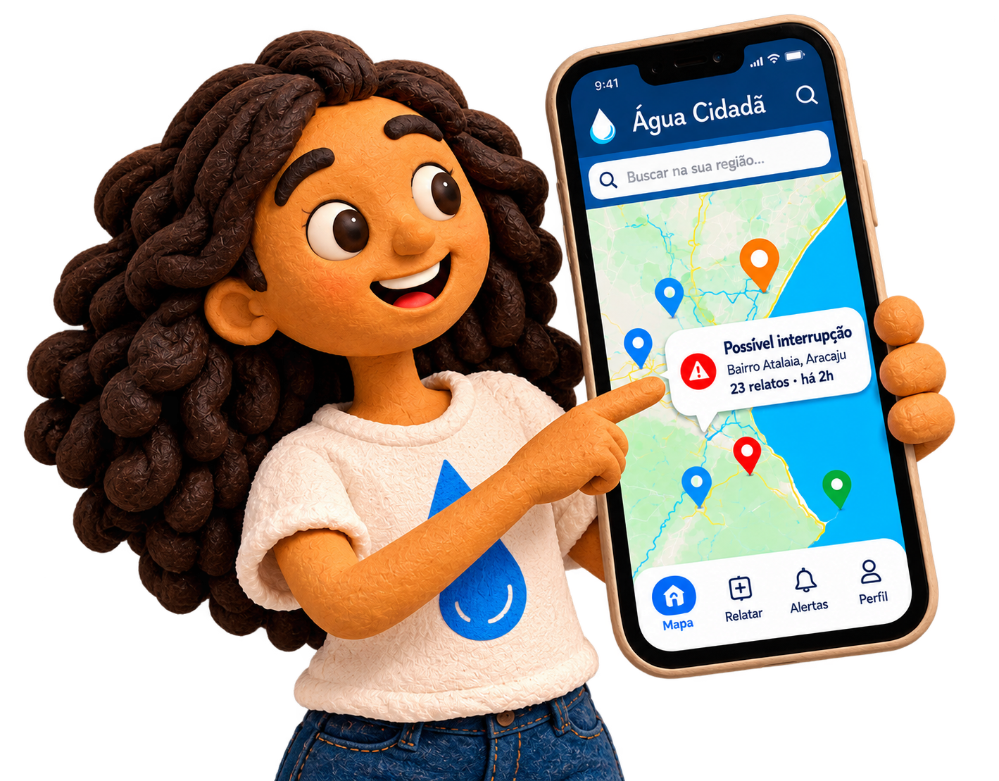
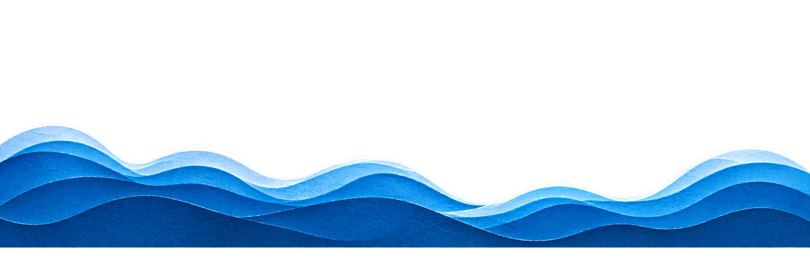

Serviços de água
Consulte suas faturas e emita a segunda via de forma rápida e centralizada, facilitando o acesso aos serviços essenciais de abastecimento.


O Água Cidadã conecta moradores, informações e serviços de saneamento em uma única plataforma.
Consulte suas faturas e emita a segunda via de forma rápida e centralizada, facilitando o acesso aos serviços essenciais de abastecimento.
Acompanhe em tempo real os relatos de falta d'água registrados pela comunidade e visualize as regiões afetadas diretamente no mapa.
O sistema cruza localização e volume de ocorrências para identificar concentrações de relatos e alertar moradores das regiões próximas.
Registre vazamentos, problemas de infraestrutura e alterações na qualidade da água utilizando evidência fotográfica, localização e data da ocorrência.
Os registros da população são transformados em dados estruturados para identificar padrões, regiões críticas e demandas recorrentes no território.
Relatórios e informações estruturadas auxiliam no acompanhamento dos serviços de saneamento e das metas de universalização.